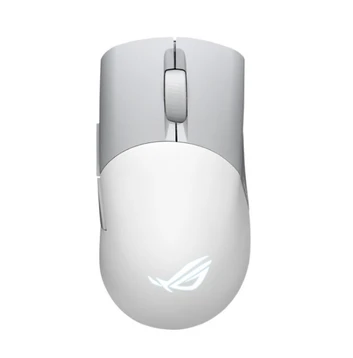

Chuột Gaming ASUS ROG Keris Aimpoint
Bảo hành chính hãng toàn quốc.
Hỗ trợ trả góp lãi suất 0%.
Hỗ trợ giao hàng toàn quốc
Đặc điểm nổi bật
Chuột Gaming ASUS ROG Keris AimPoint – Hiệu năng cao cấp cho game thủ
ASUS ROG Keris AimPoint là mẫu chuột gaming cao cấp với thiết kế siêu nhẹ, cảm biến quang học hiện đại cùng khả năng kết nối linh hoạt. Sản phẩm mang đến trải nghiệm chơi game chính xác, mượt mà và phù hợp với nhiều nhu cầu sử dụng khác nhau.
Thiết kế công thái học, siêu nhẹ
Chuột ASUS ROG Keris AimPoint được hoàn thiện từ chất liệu cao cấp với kiểu dáng công thái học hiện đại, giúp người dùng cầm nắm thoải mái trong thời gian dài. Thiết kế siêu nhẹ hỗ trợ thao tác nhanh và linh hoạt hơn trong các tựa game yêu cầu tốc độ cao.
Ba chế độ kết nối tiện lợi
Sản phẩm hỗ trợ ba chế độ kết nối gồm USB có dây, Bluetooth và Wireless 2.4GHz RF, cho phép người dùng dễ dàng sử dụng trên nhiều thiết bị khác nhau. Đặc biệt, chế độ Bluetooth có thể kết nối đồng thời với nhiều thiết bị, mang đến sự tiện lợi trong quá trình làm việc và giải trí.
Cảm biến ROG AimPoint với độ nhạy lên đến 36.000 DPI
ASUS ROG Keris AimPoint được trang bị cảm biến quang học ROG AimPoint có độ nhạy lên đến 36.000 DPI, cho khả năng theo dõi chuyển động cực kỳ chính xác. Cảm biến hỗ trợ tốc độ tracking cao, giúp ghi nhận thao tác nhanh chóng và ổn định ngay cả trong những trận đấu căng thẳng.
Nhờ độ trễ thấp cùng hiệu năng mạnh mẽ, chuột đáp ứng tốt nhu cầu chơi game chuyên nghiệp cũng như các tác vụ sử dụng hằng ngày.